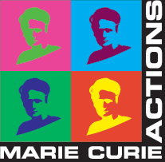

Improving Performance and Cost of Content Delivery in a Hyperconnected World
The Internet has become the predominant channel for innovation, disruption, and for creating new revenue streams. In a hyperconnected world a substantial fraction of the global population spends more and more time online to work, for shopping and entertainment, and to get access to information. We are observing an unprecedented amount of content generated by human activity and popular application such as web browsing, video streaming, and social networks that has to be delivered to the hundred of millions of Internet users around the globe. To cope with the always increasing demand for content, a number of Content Delivery Networks (CDNs) have been developed to deliver voluminous amount of content, that originates from content producers, to hundred of millions of Internet users around the globe. CDNs greatly extend the capabilities of the Internet by deploying massively distributed infrastructures to accelerate content delivery. Today, CDNs are responsible for almost half of Internet traffic. Operation at that scale poses challenges for CDNs as they have to dynamically map end-users to appropriate servers without being fully aware of the network conditions within an Internet Service Provider (ISP) or the end-user location. CDNs also try to minimize their operation cost. Moreover, ISPs struggle to cope with rapid traffic shifts caused by the dynamic server selection policies of the CDNs. In this project we develop systems and study the necessary incentives to turn the challenges, in terms of performance and cost, that content delivery stakeholders, including CDNs and ISPs, face separately into an opportunity for collaboration. We also re-examine the fragile economic model of the Internet and provide methodologies to study the trade-offs between peering cost and performance for content delivery. Finally, we propose a radical approach to push CDN functionality at the edges to deal with today's complex and personalized content in a scalable and cost-efficient manner.
Principal Investigator: Georgios Smaragdakis

The project is supported by European Union under FP7-PEOPLE-2013-IOF - Marie Curie Action: "International Outgoing Fellowships for Career Development".
For more details follow the official link to the award.